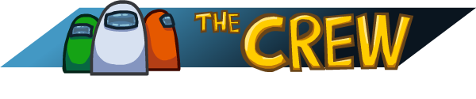
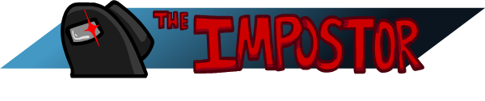
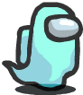

VIVOS |
MUERTOS |
|
|---|---|---|
Tripulante |
Asesino |
Fantasma |
|  |  |  |
| El tripulante de la nave es un personaje que se dedica a hacer misiones para reparar la nave mientras que a su vez que intenta desenmascarar a el asesino. | El asesino es un alienigena que se colo en la nave en el planeta Polus mientras que investigaba el planeta, ahora el alien a conseguido copiar el aspecto de los tripulantes y tiene el objetivo de matarlos. | El fantasma es un Tripulante que a muerto a manos del Asesino, el ya no puede hablar en las reuniones ni interactuar con los Tripulantes vivos pero aun puede hacer misiones. |